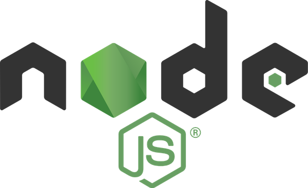

- Understand Basic CLI Concepts
- Overviewed different
npmpackages for developing a CLI - Practice with CLI in
NodewithTypeScriptand popular frameworks & libraries - Make an
oclifCLI application to manipulateGithubrepository and send Hello World notifications toslack

Please share your feedback on Mastering CLI in TypeScript workshop
workshop feedback
- Evolution of the Heroku CLI: 2008-2017
- 12 Factor CLI Apps - Heroku
- Building Great CLI Experiences in Node - Jeff Dickey, Heroku
- Building an enterprise-grade CLI with oclif by Thomas Dvornik
- Build a JavaScript Command Line Interface (CLI) with Node.js — SitePoint
- TypeScript Essentials 💡 Charly Poly
- Typescript: The Complete Developer's Guide — Stephen Grider
Alex Korzhikov
- Twitter: AlexKorzhikov
- Medium: korzio
- Github: korzio
Pavlik Kiselev
- LinkedIn
- Github: paulcodiny